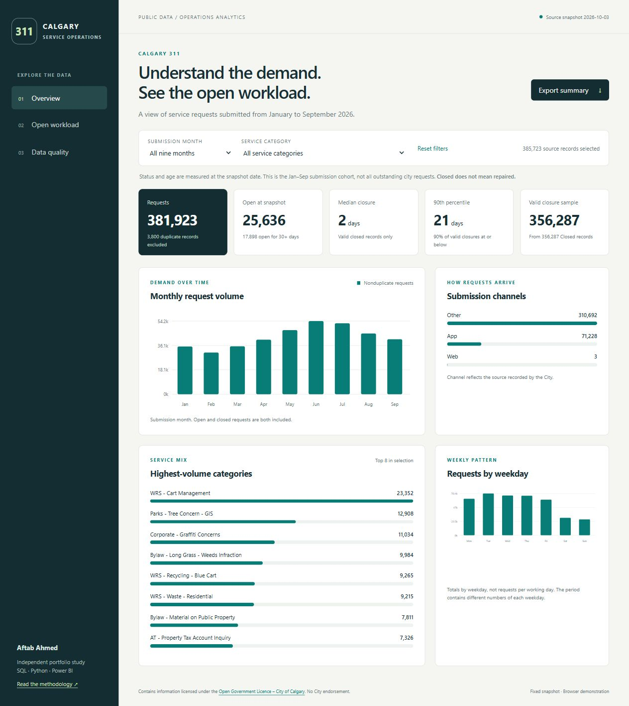
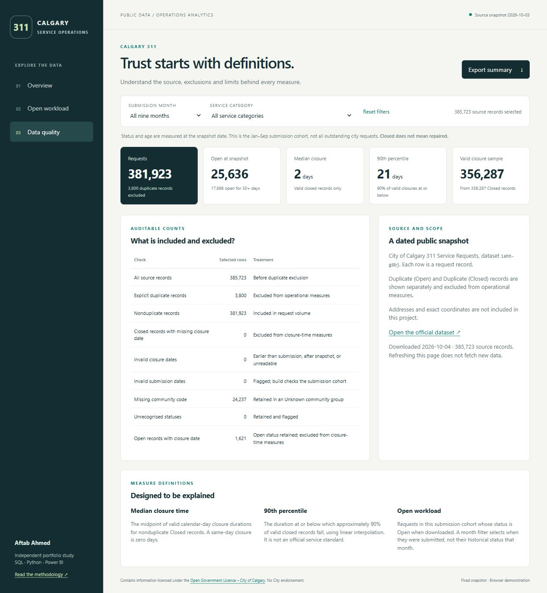

This guide explains the project, its analytical decisions, its working browser dashboard and its Power BI source. Use it to prepare a short demonstration and answer technical interview questions. The strongest part of the project is the connection between a reproducible pipeline, transparent measure definitions and careful interpretation of real operational records.
The analysis covers 385,723 service requests submitted from January through September 2026. After excluding 3,800 explicit duplicate records, 381,923 requests remain. At the source snapshot, 25,636 were open. A total of 17,898 had been open at least 30 calendar days. These are descriptive workload measures; they do not establish that service standards were missed.
The project adds request-level operational analysis alongside the existing Edmonton retail time-series project. It demonstrates SQL joins and window functions, Python data preparation, a dimensional model, filter-aware metrics, data-quality decisions and communication of limitations. The browser version gives a reviewer immediate access to the analysis without requiring Power BI or a sign-in.
The generated Power BI project provides editable source for three report pages and 14 DAX measures. JSON structures and embedded data have been checked, but Desktop execution remains pending. Describe it as Power BI project source until opening, refresh and rendering checks are completed.
An operations analyst needs to distinguish incoming demand from requests that remain open. A large volume category may have relatively little open workload, while a smaller category may contain older open requests. Looking only at average closure duration can obscure both the slower tail of closed records and records that never entered the closed sample.
This portfolio dashboard supports exploration by submission month and service category. Its intended audience is a reviewer or analyst examining where to investigate further. No City stakeholder commissioned it, and no operational improvement or financial saving has been measured.

The Node.js downloader queries the public Socrata API in pages of 10,000 records, ordered by request ID. It selects only ten useful fields and checks the source update timestamp before and after extraction. It verifies uniqueness and row counts, then writes a CSV plus a SHA-256 manifest.
Python validates that preserved input and derives dates, flags, dimensions and durations. The same fact and dimension tables are loaded into an in-memory SQLite database. SQL computes independent summaries and percentiles, and assertions compare them with Python. The browser consumes compact aggregates with exact duration histograms. A separate generator embeds compressed CSV tables in the native Power BI source.
City public API → selected CSV + provenance manifest → Python request fact + dimensions → independent SQLite reconciliation → browser aggregates + portable Power BI project
The pipeline deliberately avoids packages for its main build. Python 3.10 or later and Node.js 18 or later are sufficient. Viewing the HTML dashboard needs only a modern browser. Native Power BI authoring requires Power BI Desktop on Windows. No paid cloud service or scheduled refresh has been configured.
| Table | Grain | Role |
|---|---|---|
| FactRequests | One source request ID | Flags, dates, closure duration and open age |
| DimService | Service name plus agency | Preserves source category distinctions |
| DimChannel | Source channel | App, Other and Web |
| DimCommunity | Community code plus name | Retains missing values as Unknown |
| DimDate | Calendar day | Submission month and weekday |
| Snapshot | One metadata record | As-of date and cohort boundaries |
Four dimension relationships filter the fact in one direction. Snapshot is disconnected. Dimension keys are deterministic within the snapshot, but they are not guaranteed to remain stable after a new download. Service categories with similar names are kept separate because no verified consolidation map exists.
This query joins requests to the submission calendar, excludes explicit duplicates and uses a window function to return the preceding month's volume. The previous value is descriptive; comparing it does not establish seasonality.
SELECT d.month,
COUNT(*) AS requests,
SUM(f.is_open) AS open_at_snapshot,
LAG(COUNT(*)) OVER (ORDER BY d.month)
AS previous_month_requests
FROM FactRequests f
JOIN DimDate d ON d.date = f.requested_date
WHERE f.duplicate = 0
GROUP BY d.month
ORDER BY d.month;
COUNT counts every nonduplicate request, regardless of whether it is now open or closed. SUM of the binary open flag counts currently Open requests. The date join uses submission date, so the open count cannot be interpreted as historical month-end backlog.
The percentile query in sql/analysis.sql ranks valid closure durations using ROW_NUMBER, obtains the sample size with a window count and interpolates the positions 1 + (n − 1) × p. This independently checks Python's median and P90 without relying on a database-specific percentile extension.
Requests =
CALCULATE (
COUNTROWS ( FactRequests ),
FactRequests[duplicate] = 0
)
Median Closure Days =
MEDIAN ( FactRequests[closure_days] )
P90 Closure Days =
PERCENTILEX.INC (
FILTER (
FactRequests,
NOT ISBLANK ( FactRequests[closure_days] )
),
FactRequests[closure_days],
0.9
)
Dimension selections filter the fact before measures are evaluated. Closure duration is populated only for valid nonduplicate Closed records, so blank values keep Open and duplicate records out of the duration sample. Zero-day closures remain valid observations. P90 explicitly filters blanks. The model definitions have not yet been executed in Desktop, so these explanations describe the intended calculation and the independently checked Python and SQL equivalents.
Demand peaked in June within this cohort. June had 54,163 nonduplicate requests, followed by July with 52,529. A sensible follow-up is to compare several years with consistent service definitions before calling this a seasonal pattern.
The closed-duration distribution has a slower tail. The median is two days and P90 is 21 days. This indicates a substantial difference between the middle and upper portion of the closed sample. It does not include unresolved waiting time, and the mix of services contributes to the combined distribution.
Older open work is visible. Of 25,636 Open requests, 17,898 are at least 30 days old and 10,481 are at least 90 days old. A reasonable next step would be to obtain service-specific targets, priority and scheduled-work information before assessing timeliness or recommending staffing changes.
Status conflicts need explicit treatment. The 1,621 records marked Open despite containing a closure date could reflect reopening or source workflow behavior. This project does not assume a cause; it follows current status for open workload and flags the inconsistency.

Separating administrative closure from actual repair, and separating closed duration from open age. Combining them into a single resolution-time figure would misrepresent both the source semantics and incomplete outcomes.
The median describes the midpoint and P90 makes the slower tail visible. Both are affected by service mix and the exclusion of still-open records. The SQL service output also includes a mean, which can support further distribution comparisons.
A median depends on the ordered observations, not just the medians of groups. Even weighting group medians by their counts does not generally recover the combined median. The browser instead combines counts for each duration and recalculates the desired rank.
The build checks source checksum, row count, unique IDs and cohort dates. Python and SQL independently compute counts and percentiles. Browser aggregation is compared with those outputs. Separate fixtures test duplicates, missing dates, zero-day closure, future dates, unknown status and percentile interpolation. Model checks verify that embedded CSVs decode to exactly the source bytes and that dimension joins contain no orphan facts.
Open requests normally lack a closure date. A missing date is flagged as a closure-quality issue when the status is Closed. Open records are instead evaluated for their age at the snapshot.
No. It selects requests submitted in September and uses their observed status at the later source snapshot. Historical backlog requires status history or archived snapshots covering all relevant submission cohorts.
The evidence supports targeted review of older open categories and verification of status anomalies. It does not support a specific headcount, savings estimate or SLA judgment. Those require service targets, work schedules, complexity, costs and outcome information.
Incremental ingestion with durable keys, archived snapshots or status events, source change monitoring, validated service mappings, agreed targets, access controls where needed, observability and ownership. Those are proposed extensions, not implemented features.
The dimensional model and explicit measures are relevant to Power BI work. A future controlled intake or review workflow could use Power Apps and Power Automate, but this project does not contain those applications. Do not claim them as delivered components.
python -m unittest discover -s tests -v python scripts/build.py python scripts/build_powerbi.py python scripts/check_model.py node tests/test_dashboard.cjs
Use the preserved CSV for reproducibility. A live download changes the snapshot and must be followed by a new build, narrative review and replacement screenshots. The generated report and semantic-model files are overwritten by the generator. The README and validation document identify remaining acceptance checks.
Contains information licensed under the Open Government Licence – City of Calgary. The official 311 dataset supplies the records. Calgary's 311 FAQs explain administrative closure. This independent project implies no City endorsement.